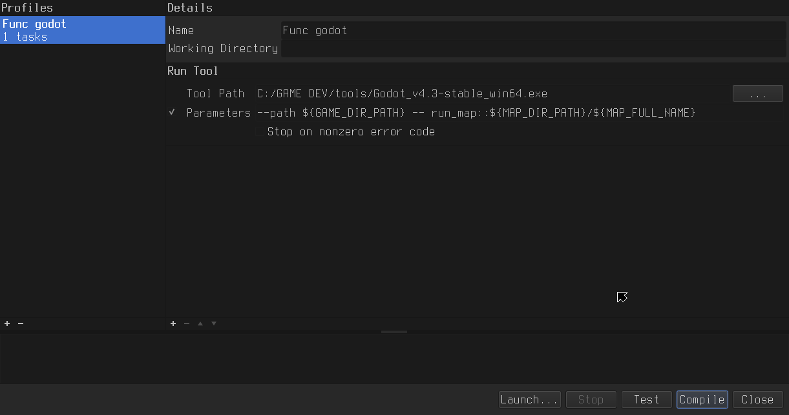
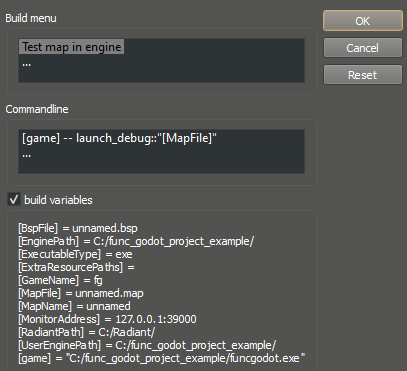

Runtime Map Building
There are times where you may want to build maps while in the middle of running your game, whether it's for loading levels from map files instead of scenes, procedural generation, or as a way to support user-made maps. Runtime map building can also be combined with map editor launch configurations to provide a largely seamless experience between making a map and seeing it in-game.
Setting up Runtime Map Building
To build a map at Runtime, start by either using a templated scene with an empty FuncGodotMap or instantiating one. Next you'll need to make sure to set either the local_map_file or global_map_file to your map's file path. Don't use load() here! That will be taken care of in the next step.
Once your map file path has been set, you can run the verify_and_build() method from the FuncGodotMap node. When this is done, your map will be built just as it would have been by pressing the Build button in the Editor, along with all of the entity callbacks. Be aware that the Engine.is_editor_hint() conditional will return as false, in case you use it to control properties handling through the FuncGodot entity callbacks.
When the map builds, it will emit the signals build_complete or build_failed. You can use these signals to handle errors gracefully and to run any post-build code you need to run.
If using LightmapGI for your global illumination solution, you can use the FuncGodotMap node's unwrap_uv2() method after receiving the build_complete signal. Once unwrapping has finished, the FuncGodotMap node will emit unwrap_uv2_complete.
NOTE: Godot 4.3 does not currently support runtime lightmap baking or UV2 unwrapping in exported builds. For now, consider using a different lighting solution for runtime building.An example of runtime map building is as follows:
extends Node
@onready var func_godot_map := $FuncGodotMap as FuncGodotMap
# We can connect the various build signals of the FuncGodotMap
# in order to add more functionality after building.
func _ready():
func_godot_map.connect("build_complete", _build_complete)
func_godot_map.connect("build_failed", _build_failed)
func_godot_map.connect("unwrap_uv2_complete", _unwrap_uv2_complete)
func_godot_map.local_map_file = "res://maps/example.map"
func_godot_map.verify_and_build()
# We need to wait for the build to finish before unwrapping mesh UV2s for lightmap baking.
# Currently lightmap baking cannot be performed at runtime, so it's not terribly useful yet.
# Consider creating a procedural Voxel GI solid class entity that can be baked at runtime instead.
func _build_complete() -> void:
print("Success! Unwrapping UV2...")
func_godot_map.unwrap_uv2()
func _build_failed() -> void:
printerr("Failed to build the map file! :(")
func _unwrap_uv2_complete() -> void:
print("UV2 unwrapping completed!")This example can be found in the func_godot_runtime_building repository.
Building from Map Editors
Much like id Tech engine games, it's possible to build and launch directly into a map from some map editors. This can be quite a helpful tool for testing rapid iterations.
Godot Project Setup Example
To build and launch our maps from the editor, you'll need to employ the OS class' ability to retrieve command line arguments. A basic example might look something like this:
extends Node
@onready var func_godot_map := $FuncGodotMap as FuncGodotMap
func _ready():
# We want to loop through each command line argument until we find
# our "run_map" argument. This argument will be split using :: as a delimiter,
# giving us a two element array with the second element being our map's path.
for cmdline_arg in OS.get_cmdline_user_args():
if cmdline_arg.contains("run_map::"):
var arg_arr := cmdline_arg.split("::")
# Safety check to make sure we didn't mess up our command line arguments.
# We should have a String array with [argument command, argument value].
if arg_arr.size() != 2:
return
# Apply the argument value to our map node and build!
func_godot_map.local_map_file = arg_arr[1]
func_godot_map.verify_and_build()This example can be found in the func_godot_runtime_building repository.
NOTE: You can extend this to have more commands like God mode or Debug mode as your game needs, and use them when launching in editor.
Setting Up Your Editor
In every map editor you'll need to specify both an executable and parameters in your build options. The executable can be either the exported binary of your game, or the Godot Editor binary if launching from a Godot project. To run your game from the Godot project, be sure to use the --path parameter, as defined in Godot's Command line reference.
TrenchBroom
The TrenchBroom Reference Manual covers Compiling Maps quite thoroughly. If you chose to use the Godot Editor for your launch executable, make sure to start your parameters with the --path command. You'll then add the -- run_map:: build command we defined earlier, using the built-in TrenchBroom variables: ${MAP_BASE_NAME} to get the name of the currently opened map file, ${MAP_DIR_PATH} for the path to the currently opened map file, and ${GAME_DIR_PATH} for the path to the current game as defined in the game preferences.
An example of the parameters to launch from the Godot Editor will look something like this: --path ${GAME_DIR_PATH} -- run_map::${MAP_DIR_PATH}/${MAP_BASE_NAME}.map
- To run your map from TrenchBroom, navigate to
Run > Compile Map. - Select the godot executable for the tool path.
- For the parameters, define the path to your game and then pass in the map we want to run. Here we use the example given above.
- Now when you press Compile your game should launch using the parameters you defined!

NOTE:${GAME_DIR_PATH}and${MAP_DIR_PATH}both fail if the file path has spaces. If this affects you, you can use the exact path with quotes around it.
NetRadiant Custom
To launch from NetRadiant Custom, you must define at least one or more build commands which are defined in your default_build_menu.xml file located in your game's gamepack folder for its build processes. These build commands may refer to build variables also defined here, or one of the default variables NetRadiant provides for you. You may either write them directly in the file yourself, or define them in the NetRadiant Custom GamePack Config resource. To preview these defaults, or any of your defined commands and their current values, select Build > Customize... in the top menu bar and check the build variables option.
A build profile might look something like this:
<?xml version="1.0"?>
<project version="2.0">
<var name="game">"[EnginePath]example_project.[ExecutableType]"</var>
<build name="Run and build map in exported project">
<command>[game] -- run_map::"[MapFile]"</command>
</build>
</project>After making any changes to this file, restart NetRadiant Custom. The build menu will now show your new options; selecting one will run the command you defined above!
